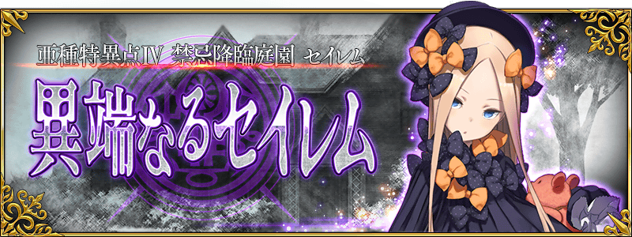
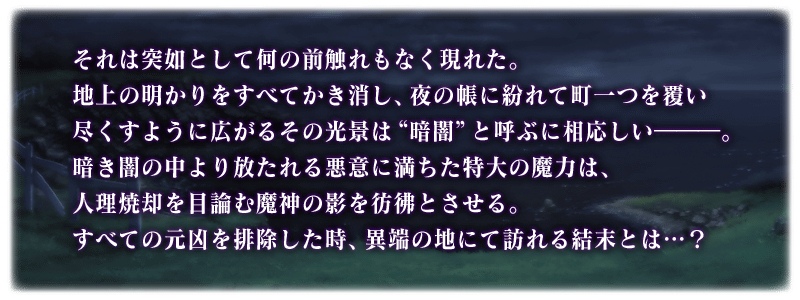
◆公開時間◆
2017年11月29日(三) 17:00～
◆亞種特異點Ⅳ開幕◆
「亞種特異點Ⅳ 禁忌降臨庭園 塞勒姆 異端的塞勒姆」的舞台為北美・東海岸某處都市。
被黑暗舊俗扎根的小鎮舞台，展開七天與新Servant們的探索。
◆開放條件◆
通過「終局特異點」後開放。
※不需要通過「亞種特異點Ⅰ 惡性隔絕魔境 新宿 新宿幻靈事件」、「亞種特異點Ⅱ 傳承地底世界 雅戈泰 雅戈泰之女」、「亞種特異點Ⅲ 屍山血河舞台 下總國 英靈剣豪七番勝負」。
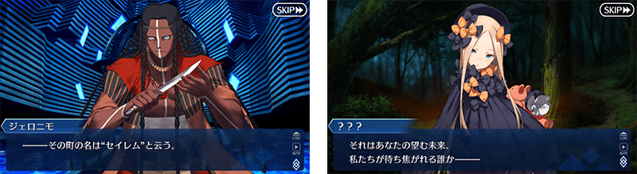
在Fate/Grand Order官方網站內首頁及Gallery，公開了亞種特異點Ⅳ的TVCM。
敬請確認。
正所謂「在禁止戰鬥行為，被法律守護的城鎮中，充滿迷團的7天間。」的短句，「Fate/Grand Order」史上最異端及狂氣的故事即將展開。
能享受故事的「亞種特異點Ⅳ 禁忌降臨庭園 塞勒姆 異端的塞勒姆」主線關卡將逐日開放。
| 關卡名 | 時間表(預定) | |
|---|---|---|
| 序幕～第3節 | 11月29日(三) 17:00～ | |
| 第4節～第6節 | 11月30日(四) 23:00～ | |
| 第7節以後 | 12月2日(六) 23:00～ | |

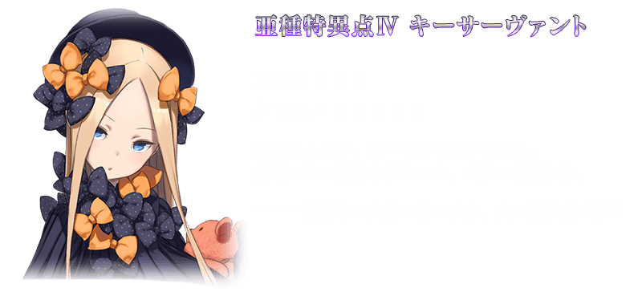
在亞種特異點Ⅳ的主線關卡中冒險部份會顯示専用的外框展開「劇中劇」。
請盡情享受由“話劇劇團”帶來的「劇中劇」。
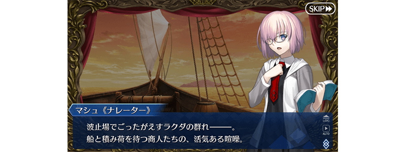
隨著亞種特異點Ⅳ的故事進行來真名判明的Servant以複數登場。
名判明前的Servant，在靈基一覧畫面和編成畫面等各種畫面中會以隱藏真名狀態顯示。
還有，關於召喚時的演出和戰鬥時的語音等，在真名的判明前與判明後播放會有所差異。
各自的演出和語音，真名判明後可以在圖鑑(マテリアル)和Servant詳細畫面的語音清單中確認。

在亞種特異點Ⅳ的主線關卡，對Caster職階的全Servant賦予在關卡中自身的絆點數獲得量提升效果。
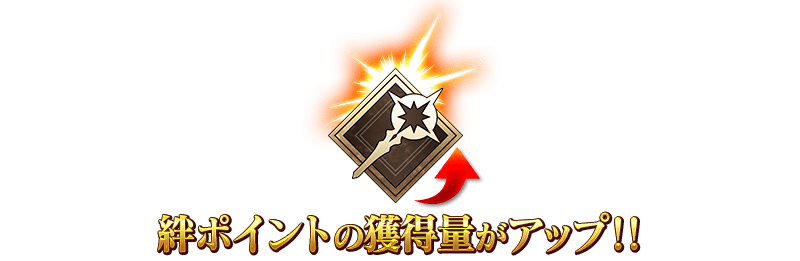
在亞種特異點Ⅳ會出現持有特殊HP量條的強力敵人。
這種敵人，必須減少複數次量條才能擊倒！
※透過一次的攻擊，超過HP量條的傷害不反映在下個HP量條。
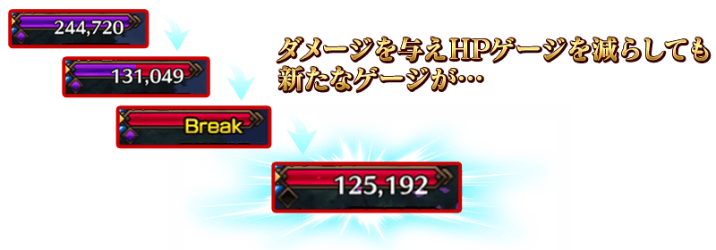
※開發中畫面。
自亞種特異點Ⅳ，追加新道具1種類！
為新登場Servant的技能強化及靈基再臨必要的道具。
主要可以從亞種特異點Ⅳ主線關卡的敵人做為戰利品來獲得。
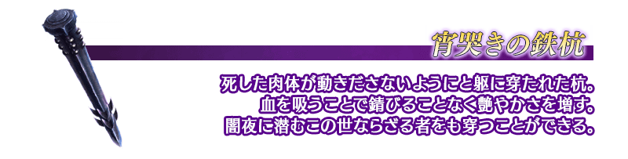
在Servant強化畫面中，可顯示持有的強化素材張數職階等。
切換標籤的話可從「持有欄位」「靈基保管室」「合計」的3種類之中變更顯示方法。
【持有欄位(所持枠)】
顯示在持有Servant欄位所持有的強化素材張數。
【靈基保管室】
顯示在靈基保管室所保管的強化素材張數。
【合計】
顯示持有欄位與靈基保管室有的強化素材合計張數。
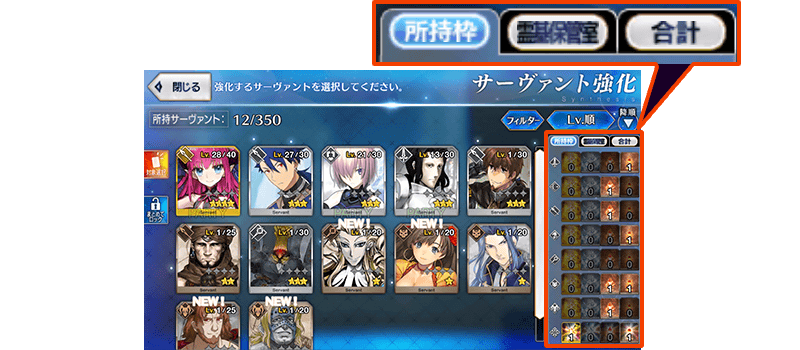
◆「塞勒姆Pick Up召喚(每日交替)」期間◆
期間:2017年11月29日(三) 17:00～12月13日(三) 11:59
為了記念亞種特異點Ⅳ開幕，以期間限定舉辦「塞勒姆Pick Up召喚(每日交替)」！
※未到達亞種特異點Ⅳ的狀態也能進行「塞勒姆Pick Up召喚(每日交替)」。
於「亞種特異點Ⅳ 禁忌降臨庭園 塞勒姆 異端的塞勒姆」活躍的Servant「★4(SR)哪吒」「★4(SR)俄刻阿諾斯的Caster」新登場。
上述2位的Servant以每日交替Pick Up！
另外，新概念禮裝「★3(R)魂喰い」也先行新登場！
※在「亞種特異點Ⅳ 禁忌降臨庭園 塞勒姆 異端的塞勒姆」登場的關鍵Servant不包含在「塞勒姆Pick Up召喚(每日交替)」。
※哪吒、俄刻阿諾斯的Caster在Pick Up期間結束後會追加到故事召喚。
Pick Up期間中，新登場Servant的出現機率提升！
詳情請在聖晶石召喚畫面左下的召喚詳細確認。
※新登場Servant及新登場概念禮裝會在Pick Up期間結束後追加到故事召喚。
※關於真名尚未判明的Servant，透過主線關卡的進行會讓Servant及一部份寶具的名稱變化。
10次召喚中確定1張★4(SR)以上和確定1位★3(R)以上的Servant！
※確定★4(SR)以上包含Servant和概念禮裝。
※所謂「出現機率提升」意指比同稀有度的Servant出現機率更高的設定。
| 每日交替Pick Up期間 | 每日交替Pick Up內容 |
|---|---|
| 11月29日(三) 17:00～ 12月1日(五) 22:59 |
哪吒 俄刻阿諾斯的Caster |
| 12月1日(五) 23:00～ 12月3日(日) 22:59 |
哪吒 |
| 12月3日(日) 23:00～ 12月5日(二) 22:59 |
俄刻阿諾斯的Caster |
| 12月5日(二) 23:00～ 12月7日(四) 22:59 |
哪吒 俄刻阿諾斯的Caster |
| 12月7日(四) 23:00～ 12月9日(六) 22:59 |
哪吒 |
| 12月9日(六) 23:00～ 12月11日(一) 22:59 |
俄刻阿諾斯的Caster |
| 12月11日(一) 23:00～ 12月13日(三) 11:59 |
哪吒 俄刻阿諾斯的Caster |
※請注意會以每日交替變更Pick Up的Servant。
介紹哪吒、俄刻阿諾斯的Caster的寶具演出！
在Fate/Grand Order官方網站內的公告中，公開了「★4(SR)哪吒」「★4(SR)俄刻阿諾斯的Caster」的寶具演出。敬請確認。
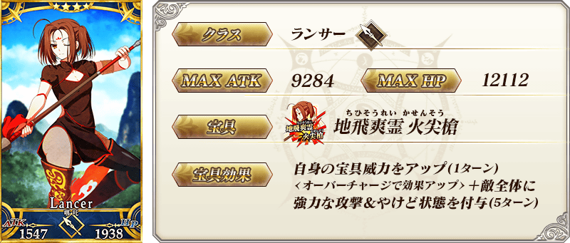
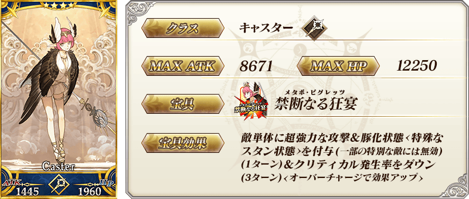
 |
★★★R |
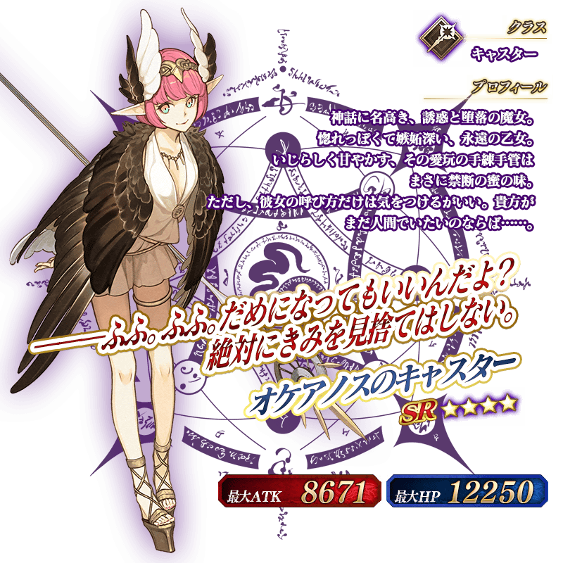